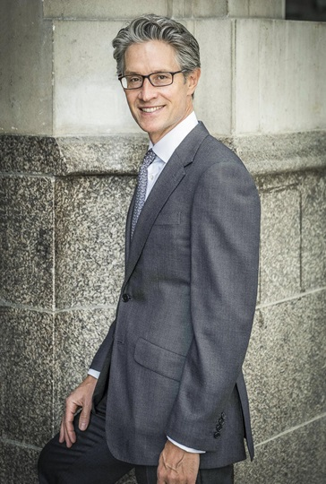

Jonathan Barnard KC

"Fabulously talented and easy to work with” (Chambers & Partners, 2023)
“Incredibly organised and over the detail of the case, more so than any of his opponents” (Legal 500, 2023)
"Highly experienced and sought-after counsel; razor-sharp intelligence combined with persuasive advocacy and an imperturbable manner" (Legal 500, 2022)
"A top advocate", "Calm under pressure, very measured, intelligent and impressive on the detail", "‘One of the best strategists out there…excellent on his feet" (Chambers and Partners, 2022)
“Terrific; a new silk who's very calm, incredibly hard-working, clients love him”, “He combines sophistication with approachability and his sensitivity to a client's best interests is second to none” (Chambers & Partners High Net Worth Financial Crime, 2022)
Winner, Crime junior of the Year (Chambers & Partners, 2016)
Ranked by: Chambers & Partners (Financial Crime, Financial Crime Corporate, Financial Crime High Net Worth), Legal 500, Who's Who Legal: Business Crime and Best Lawyers in the United Kingdom.
Jonathan is a highly respected leading advocate in the fields of crime and fraud, operating “at the highest end of the market”. Singled out by the directories as an “elegant”, “charismatic” advocate and “excellent strategist”, he wins praise for his “supreme” judgement and “superb analytical skills". Jonathan is routinely instructed to represent professional and corporate clients in high-profile, financial and heavyweight criminal matters both at trial and for strategic advice at the investigation stage. “A class act”, he is noted for being “incredibly intelligent”, “extremely industrious” and “really great to work with”.
Jonathan represented Victor Dahdaleh, the “power broker” acquitted on all counts re corruption of the Prime Minister of Bahrain [2014] 1 W.L.R. 1857. He also secured the acquittals on rape charges of Eddy Shah, the former media magnate, and Dr Falkowski, consultant psychiatrist (the latter subsequently made into the film “U B Dead”).
More recently, Jonathan appeared in:
- ENRC v Dechert LLP (Top 20 Cases 2022, The Lawyer): re multi-million pound civil claim, co-defending with the SFO [2021] 7 WLUK 680;
- SFO v Barclays (winner - Most Important Court Case 2020, GIR): for first defendant, acquitted of all charges re multi-billion pound capital raise in 2008 [2019] 6 WLUK 873; [2020] Lloyd's Rep. R.C. 331;
- SFO v Tesco: for first defendant, acquitted of all charges re alleged fraud of over £300m [2019] 1WLUK 176;
- SFO v Alstom: acquitted of all charges re overseas corruption [2016] Q.B. 763;
- R v Robinson: for first defendant, acquitted of all fraud charges before the Supreme Court of Gibraltar. Leading Authority on stay [2015] Gib LR 216 and prosecutorial misconduct [2015] Gib LR 410;
- R v Sivaraman: High Court upheld stay (with costs) of high profile private prosecution of gynaecologist [2015] 12 WLUK 619;
- R v Evans: successfully resisted the SFO's High Court application for a voluntary bill of indictment against CEO [2015] 1 W.L.R. 3526, [2015] 1 W.L.R. 3595, [1025] Lloyd's Rep, F.C. 496;
and advised:
- Property tycoon Raymond Kwok, the only defendant to be acquitted in Hong Kong’s largest ever graft trial;
- The last editor of The News Of the World in his long running contempt proceedings before Parliament;
- A former high-ranking official at the Bank of England in relation to the SFO probe into LIBOR fixing.
Jonathan’s current instructions include:
- Advising Rio Tinto Plc in SFO investigation;
- Representing the former director of a hedge fund charged with defrauding the Libyan sovereign wealth fund;
- Representing a former partner of a major law firm charged with fraud.